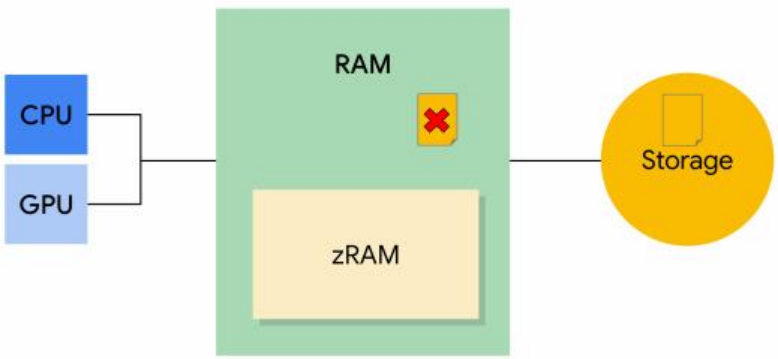

Android内存概述
内存类型
Android 设备包含三种不同类型的内存：RAM、zRAM 和存储器。CPU 和 GPU 访问同⼀个 RAM。
- RAM 是最快的内存类型，但其⼤⼩通常有限。⾼端设备通常具有最⼤的 RAM 容量。
- zRAM 是⽤于交换空间的 RAM 分区。所有数据在放⼊ zRAM 时都会进⾏压缩，然后在从 zRAM 向外复制时进⾏解压缩。这部分 RAM 会随着⻚⾯进出 zRAM ⽽增⼤或缩⼩。设备制造商可以设置 zRAM ⼤⼩上限。
- 存储器中包含所有持久性数据（例如⽂件系统等），以及为所有应⽤、库和平台添加的对象代码。存储器⽐另外两种内存的容量⼤得多。在 Android 上，存储器不像在其他 Linux 实现上那样⽤于交换空间，因为频繁写⼊会导致这种内存出现损坏，并缩短存储媒介的使⽤寿命。
内存页⾯
RAM 分为多个“ 页⾯ ”。通常 ，每个页⾯为 4KB 的内存。
系统会将页⾯视为“ 可⽤ ”或“ 已使⽤ ”。可⽤页⾯是未使⽤的 RAM。 已使⽤的页⾯是系统⽬前正在 使⽤的 RAM ，并分为以下类别：
⽂件背景（file-backed pages） 页：
对于有⽂件背景的页⾯ ，程序去读⽂件时 ，可以通过read , 也可以通过mmap去读。
当你通过任何⼀种 ⽅式从磁盘读⽂件时 ，内核都会给你申请⼀个page cache ，来缓存硬盘上的内容。
⽂件对于⽤户程序来讲其实只是内存 ，page cache就是磁盘中⽂件的⼀个副本。
1 | 可以通过 “ echo 3 >/proc/sys/vm/drop_cache” 来清cache。清掉之后 ，进程第⼀次读⽂件就会变慢。 |
⽂件背景（file-backed pages） 页有两种类型：
- 私有页： 由⼀个进程拥有且未共享
- ⼲净页：存储器中未经修改的⽂件副本
- 脏页：存储器中经过修改的⽂件副本
- 共享页： 由多个进程使⽤
- ⼲净页：存储器中未经修改的⽂件副本
- 脏页：存储器中经过修改的⽂件副本
匿名（anonymous pages） 页：
没有⽂件背景的页⾯ ，即匿名页（anonymous page） ，如堆 ，栈 ，数据段等 ，不是以⽂件形式存在。
- 脏⻚：可由 kswapd 移动到 zRAM/在 zRAM 中进⾏压缩以增加可⽤内存
内存不⾜管理
Android 有两种处理内存不⾜情况的主要机制：
- 内核交换守护进程(kswapd)
- 低内存终⽌守护进程(lmkd)
内核交换守护进程(kswapd)
内核交换守护进程 ( kswapd ) 是 Linux 内核的⼀部分，⽤于将已使⽤内存转换为可⽤内存。当设备上的可⽤内存不⾜时，该守护进程将变为活动状态。Linux 内核设有可⽤内存上下限阈值。当可⽤内存降⾄下限阈值以下时， kswapd 开始回收内存。当可⽤内存达到上限阈值时， kswapd 停⽌回收内存。
kswapd 可以删除⼲净⻚来回收它们，因为这些⻚受到存储器的⽀持且未经修改。如果某个进程尝试处理已删除的⼲净⻚，则系统会将该⻚⾯从存储器复制到 RAM。此操作称为“请求分⻚”：

kswapd 可以将缓存的私有脏⻚和匿名脏⻚移动到 zRAM 进⾏压缩。这样可以释放 RAM 中的可⽤内存（可⽤⻚⾯）：
如果某个进程尝试处理 zRAM 中的脏⻚，该⻚将被解压缩并移回到 RAM。
如果与压缩⻚⾯关联的进程被终⽌，则该⻚⾯将从 zRAM 中删除。
如果可⽤内存量低于特定阈值，系统会开始终⽌进程。
低内存终⽌守护进程(lmkd)
很多时候， kswapd 不能为系统释放⾜够的内存。在这种情况下，系统会使⽤ onTrimMemory()通知应⽤内存不⾜，应该减少其分配量。如果这还不够，内核会开始终⽌进程以释放内存。它会使⽤低内存终⽌守护进程 (LMK) 来执⾏此操作。
LMK 使⽤⼀个名为 oom_adj_score 的“内存不⾜”分值来确定正在运⾏的进程的优先级，以此决定要终⽌的进程。最⾼得分的进程最先被终⽌。后台应⽤最先被终⽌，系统进程最后被终⽌。
LMK 评分类别
下表列出了从⾼到低的 LMK 评分类别。评分最⾼的类别，即第⼀⾏中的项⽬将最先被终⽌：
以下是上表中各种类别的说明：
- 后台应⽤：之前运⾏过且当前不处于活动状态的应⽤。LMK 将⾸先从具有最⾼ oom_adj_score 的应⽤开始终⽌后台应⽤。
- 上⼀个应⽤：最近⽤过的后台应⽤。上⼀个应⽤⽐后台应⽤具有更⾼的优先级（得分更低），因为相⽐某个后台应⽤，⽤⼾更有可能切换到上⼀个应⽤。
- 主屏幕应⽤：这是启动器应⽤。终⽌该应⽤会使壁纸消失。
- 服务：服务由应⽤启动，可能包括同步或上传到云端。
- 可觉察的应⽤：⽤⼾可通过某种⽅式察觉到的⾮前台应⽤，例如运⾏⼀个显⽰⼩界⾯的搜索进程或听⾳乐。
- 前台应⽤：当前正在使⽤的应⽤。终⽌前台应⽤看起来就像是应⽤崩溃了，可能会向⽤⼾提⽰设备出了问题。
- 持久性（服务）：这些是设备的核⼼服务，例如电话和 WLAN。
- 系统：系统进程。这些进程被终⽌后，⼿机可能看起来即将重新启动。
- 原⽣：系统使⽤的极低级别的进程（例如， kswapd ）。
设备制造商可以更改 LMK 的⾏为。
ADJ级别
| ADJ级别 | 取值 | 含义 |
|---|---|---|
| NATIVE_ADJ | -1000 | native进程 |
| SYSTEM_ADJ | -900 | 仅指system_server进程 |
| PERSISTENT_PROC_ADJ | -800 | 系统persistent进程 |
| PERSISTENT_SERVICE_ADJ | -700 | 关联着系统或persistent进程 |
| FOREGROUND_APP_ADJ | 0 | 前台进程 |
| VISIBLE_APP_ADJ | 100 | 可见进程 |
| PERCEPTIBLE_APP_ADJ | 200 | 可感知进程，比如后台音乐播放 |
| BACKUP_APP_ADJ | 300 | 备份进程 |
| HEAVY_WEIGHT_APP_ADJ | 400 | 重量级进程 |
| SERVICE_ADJ | 500 | 服务进程 |
| HOME_APP_ADJ | 600 | Home进程 |
| PREVIOUS_APP_ADJ | 700 | 上一个进程 |
| SERVICE_B_ADJ | 800 | B List中的Service |
| CACHED_APP_MIN_ADJ | 900 | 不可见进程的adj最小值 |
| CACHED_APP_MAX_ADJ | 906 | 不可见进程的adj最大值 |
⻚⾯回收(reclaim)
- 有⽂件背景的数据实际上就是page cache，但page cache不能⽆限增加，不能说慢慢的所有⽂件都缓存到内存了。肯定要有⼀个机制，让不常⽤的⽂件数据从page cache刷出去。内核中有⼀个⽔位控制的机制，在系统内存不够⽤的时候，会触发⻚⾯回收。
- 对于没有⽂件背景的⻚⾯即匿名⻚，⽐如堆、栈、数据段，如果没有swap分区，不能与磁盘交换，就要常驻内存了。但是常驻内存的话，就会吃内存，可以通过给硬盘搞⼀个swap分区或硬盘中创建⼀个swap⽂件让匿名⻚也能交换到磁盘上。可认为是为 **匿名⻚伪造的⽂件背景(dev/zero)**。swap分区或swap⽂件实际上最终是到达了增⼤内存的效果。当然，如果频繁交换的话，被交换出去的数据的访问就会慢⼀些，因为要有IO操作了。
- Android没有使⽤swap机制，⽽是使⽤zRAM机制替代。
⽔位（watermark）控制
内核中有三个⽔位：
- min：如果剩余内存减少到触及这个⽔位，可认为内存严重不⾜，当前进程就会被堵住，kernel会直接在这个进程的进程上下⽂⾥⾯做内存回收（direct reclaim）。
- low：当剩余内存慢慢减少，触到这个⽔位时，就会触发kswapd线程的内存回收。
- high: 进⾏内存回收时，内存慢慢增加，触到这个⽔位时，就停⽌回收。
由于每个ZONE是分别管理各⾃内存的，因此每个ZONE都有这三个⽔位
swapness
回收的时候，是回收有⽂件背景的⻚，还是匿名⻚，还是都会回收呢，可通过/proc/sys/vm/swapness来控制让谁回收多⼀点点。
swappiness越⼤，越倾向于回收匿名⻚；
swappiness越⼩，越倾向于回收file-backed的⻚⾯。
当然，它们的回收⽅法都是⼀样的LRU算法，即最近最少使⽤的⻚会被回收。
zRAM机制
Android⽤zRAM机制来缓解内存紧张：从内存⾥拿出⼀段内存空间（compressed block），作为交换空间模拟硬盘的交换分区，⽤来交换匿名⻚，并且让kernel看到的物理内存⼤⼩不包括这段内存。⽽这段交换空间⾃带透明压缩功能，即交换到这块zRAM分区时，Linux会⾃动将这块匿名⻚压缩存放。系统访问这块⻚⾯的内容时，产⽣page fault后从交换分区去拿，这时Linux给你透明解压再交换出来。
使⽤zRAM的好处，就是访存⽐访问硬盘或flash的速度提⾼很多，且不⽤考虑寿命问题，并且由于这段内存是压缩后存储的，因此可以存更多的数据，虽然占⽤了⼀段内存，但实际可以存更多的数据，也达到了增加内存的效果。缺点就是压缩要占⽤CPU时间。Android⾥⾯普遍使⽤了zRAM技术，由于zRAM牺牲了CPU时间，所以交换次数还是越少越好。